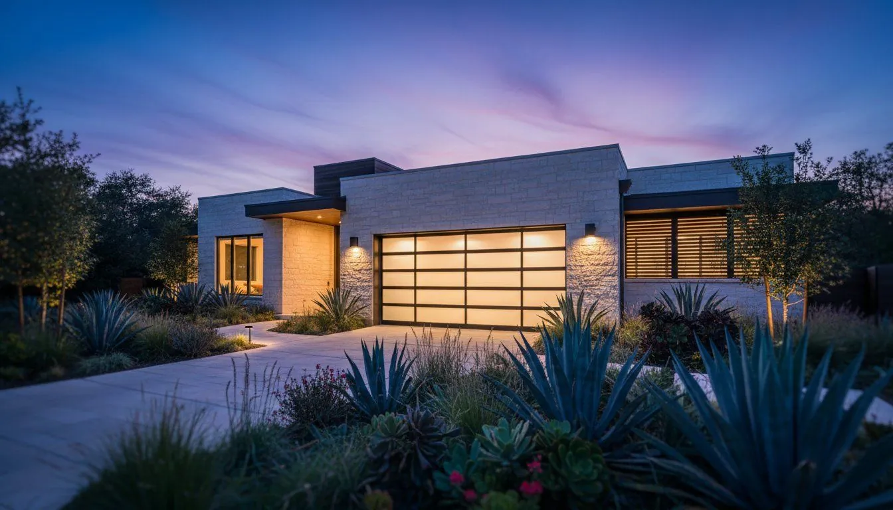

How Austin's Heat and Humidity Affect Your Garage Door (And How to Protect It)
Central Texas summers are rough. Triple-digit heat, strong UV, and humidity that swings all year long. Your garage door deals with all of it, every day. Here is what we have learned from working on Austin doors, and how to keep yours in good shape through every season.

How Austin's Climate Is Different
Most maintenance advice is written for an average climate, and Austin isn't one. We get long stretches of triple-digit heat, a high UV index, damp spring storm seasons, and the occasional hard freeze. Every metal, rubber and moving part in your door feels that mix.
We work on doors in every part of Austin all year, and we keep running into the same climate-driven problems. They tend to show up sooner and hit harder than they would on the same door in a milder part of the country.
Heat Warps Wood Panels
Wood doors, and doors with a wood overlay, have it the worst in a Texas summer. Heat makes wood warp, crack and pull apart at the joints. South and west-facing garages suffer most because the sun beats on them for hours every afternoon. If you have a wood or wood-look door, put a UV-resistant sealant on the outside once a year. Skip it and the panels will wear out noticeably faster than the manufacturer says they should.
Metal Expands and Contracts
Steel and aluminum grow in the heat and shrink back overnight. After a few years of that, screws loosen, tracks can warp a little, and seals wear out sooner than they would elsewhere. It is why we tell Austin homeowners to check their hardware every quarter, not once a year like most guides suggest. A bolt that felt snug in April can be noticeably loose by August.
Rubber Seals Wear Out Fast
The bottom seal and the weatherstripping on the sides and top are rubber, and rubber doesn't love Texas sun. Plan to replace the bottom seal every 2 to 3 years here, not the 5 years that is typical in cooler places. A cracked, hard seal lets in hot air, rain and bugs. It is one of the cheapest fixes on the whole door, and one of the most ignored.
Humidity and Springs
Austin's humidity, especially in the spring storm season from March through May, speeds up rust on uncoated torsion springs. A spring that might last 7 to 10 years in a dry climate can show real surface rust in 3 to 4 years here if nobody lubricates it. If your springs aren't galvanized or powder-coated, ask for corrosion-resistant ones next time you replace them. They cost a bit more up front and last a lot longer in humid Texas air.
Seasonal Maintenance Schedule for Austin
Spring (March to May)
- Inspect all the rubber seals
- Lubricate springs, hinges and rollers
- Check spring tension before summer heat arrives
- Tighten hardware after winter
- Test the safety sensors and auto-reverse
Summer (June to August)
- Make sure the opener isn't overheating
- Check door balance once a month
- Look over the finish for UV damage
- Seal wood doors against UV
- Keep the tracks clear of debris
Fall (September to November)
- Replace any worn-out seals
- Tighten hardware that summer shook loose
- Test the auto-reverse again
- Lubricate all the moving parts
- Book your yearly professional tune-up
Winter (December to February)
- Check the seals after any freeze
- Look for brittle or cracked rubber
- Test the door balance after temperature drops
- Watch for spring trouble after the first freeze
What We See Most on Austin Service Calls
Springs that break in January or February after the first hard freeze. Plastic rollers that have cracked from UV and heat. Seals that have gone rock hard and no longer touch the floor. Bolts that have rattled loose from years of expanding and shrinking. None of this is random. It follows Austin's weather very closely.
The good news is that you can prevent almost all of it with a simple seasonal routine and a yearly tune-up from a pro.
Related Services
Frequently Asked Questions
Protect Your Door From Texas Weather
Book a seasonal inspection with our Austin team and we will catch weather-related damage before it becomes an expensive repair.
Call (512) 947-4451